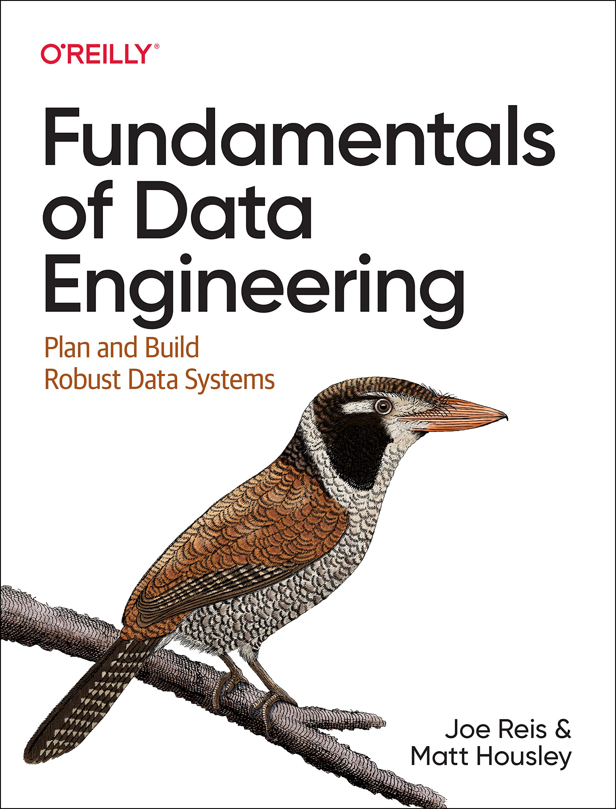
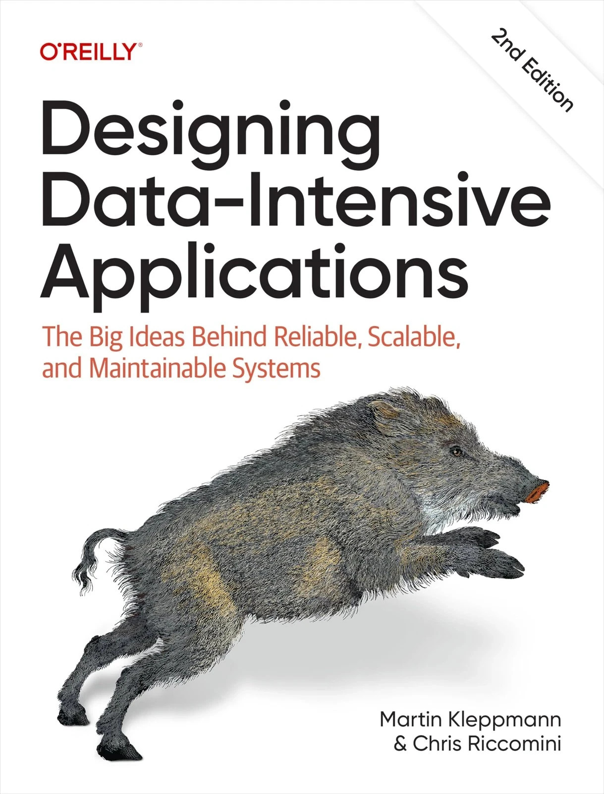
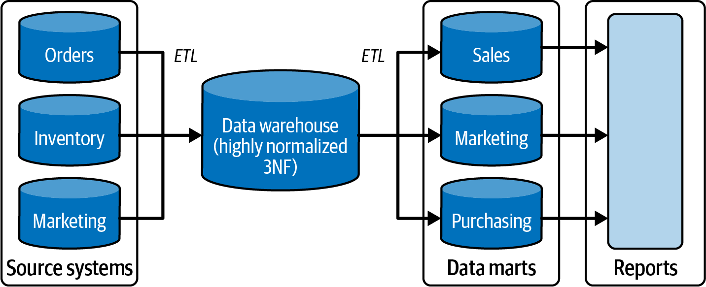
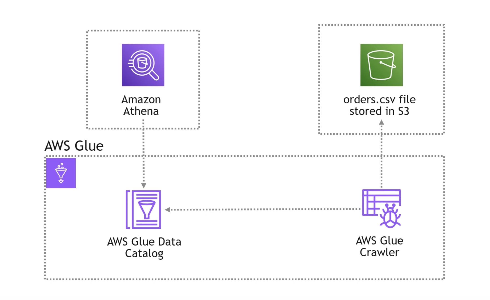

DSAN 6000: Big Data and Cloud Computing
Fall 2026
Monday, October 5, 2026
.parquet metadata describing a column schema
Data engineering is the development, implementation, and maintenance of systems and processes that take in raw data and produce high-quality, consistent information that supports downstream use cases, such as analysis and machine learning (Reis and Housley 2022)
Bolded terms \(\Rightarrow\) new skills, tools in your toolkit:
Once this is done, data may be stored in a central repository such as a data lake or data lakehouse.

Recall how many tiny bits of information are streaming into a given app’s servers at any given time!
Database administrators therefore closely guard their OLTP databases. They are usually reluctant to let business analysts run ad hoc analytic queries on an OLTP database, since those queries are often expensive, scanning large parts of the dataset, which can harm the performance of concurrently executing transactions. (Kleppmann and Riccomini 2026)
Before the data warehouse, the analysis would often occur directly on the source system itself, with the obvious consequence of bogging down production transactional databases with long-running queries. The goal of the data warehouse was to separate the source system [OLTP] from the analytical system [OLAP]. (Reis and Housley 2022, 295)
Data in the data warehouse is able to be used for many different purposes, including sitting and waiting for future requirements which are unknown today. (Inmon 1992)

Reis and Housley (2022), Figure 8-13, p. 297
At center, a single fact table:
Pointers to dimension tables:

From this video
DSAN 6000 Week 6: Data Engineering